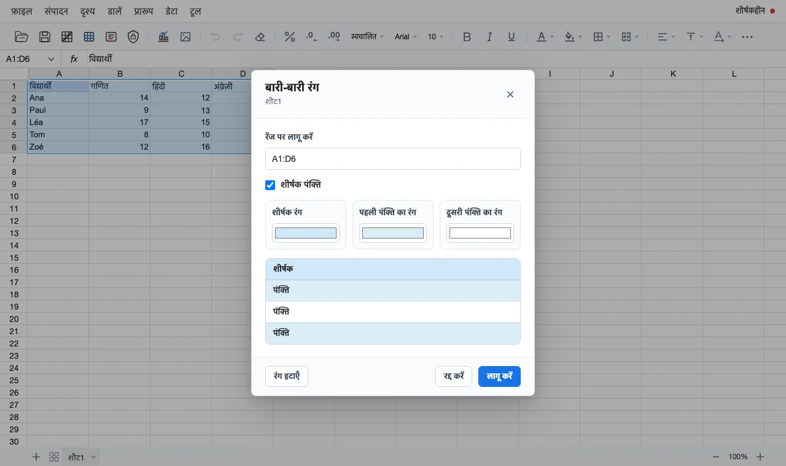

फ़ॉर्मेटिंग
टेक्स्ट
| आदेश | कहाँ |
|---|---|
| बोल्ड, इटैलिक, रेखांकित | ; Ctrl B, Ctrl I, Ctrl U |
| फ़ॉन्ट | Arial सूची: तेरह फ़ॉन्ट |
| आकार | 10 सूची, या प्रारूप › फ़ॉन्ट साइज़: 9 से 72 |
| टेक्स्ट का रंग, पृष्ठभूमि का रंग | |
| फ़ॉर्मेटिंग हटाना | , प्रारूप › फॉर्मेट साफ़ करें |
रंग पट्टिका में रंग रीसेट करें रंग हटाता है; कस्टम सिस्टम का रंग चयनक खोलता है।
सेल संपादित करते समय फ़ॉर्मेटिंग टेक्स्ट के चुने भाग पर लगती है।
संरेखण
| आदेश | विकल्प |
|---|---|
| क्षैतिज | बाएँ, मध्य, दाएँ |
| लंबवत | ऊपर, मध्य, नीचे |
| घुमाव | तिरछा, लंबवत, स्टैक |
| रैप | ओवरफ्लो: बगल के खाली सेलों पर; रैप: कई पंक्तियों में; क्लिप: किनारे पर कटा |
संरेखण न चुना हो तो संख्याएँ और दिनांक दाएँ, बाकी बाएँ रहते हैं।
बॉर्डर
चुना हुआ बॉर्डर खींचता है; उसका तीर किनारे (ऊपर, बाहरी, भीतरी, सभी, कोई नहीं, विकर्ण), रेखा का रंग और शैली देता है। किनारे से पहले रंग और शैली चुनें।
सेल मिलाना
या प्रारूप › सेल मिलाएँ:
| आदेश | परिणाम |
|---|---|
| सभी को मिलाएँ | एक ही सेल, जिसमें एक सामग्री रहती है |
| लंबवत मिलाएँ | हर कॉलम में एक सेल |
| क्षैतिज मिलाएँ | हर पंक्ति में एक सेल |
| मिलाना रद्द करें | सेल लौटाता है |
मिले हुए सेलों वाली रेंज क्रमबद्ध या फ़िल्टर नहीं होती।
बारी-बारी रंग
या प्रारूप › बारी-बारी रंग... चुनी रेंज की हर दूसरी पंक्ति रंगता है, चाहें तो शीर्षक पंक्ति सहित। तीनों रंग चुने जा सकते हैं।

ये साधारण पृष्ठभूमि रंग हैं: क्रम बदलने या पंक्ति जोड़ने पर साथ नहीं चलते। रंग हटाएँ उन्हें रेंज से हटाता है।
ग्रिडलाइन
या दृश्य › दिखाएँ › ग्रिडलाइन वर्कबुक की सभी शीटों में धूसर रेखाएँ छिपाता या दिखाता है। प्रिंट की अपनी सेटिंग है।
मान पर निर्भर रंग के लिए सशर्त स्वरूपण देखें।